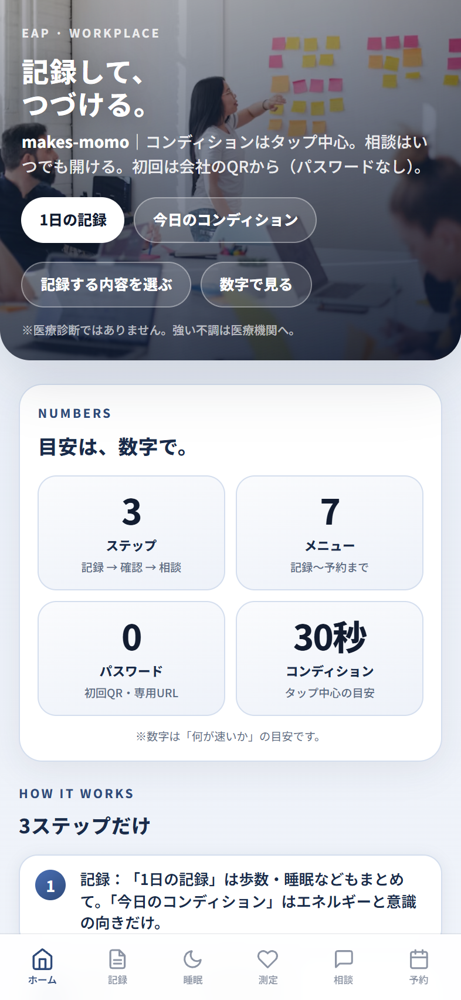
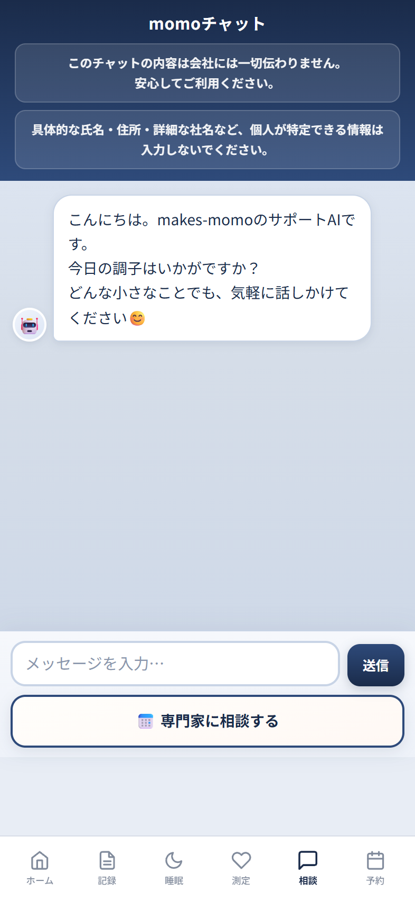
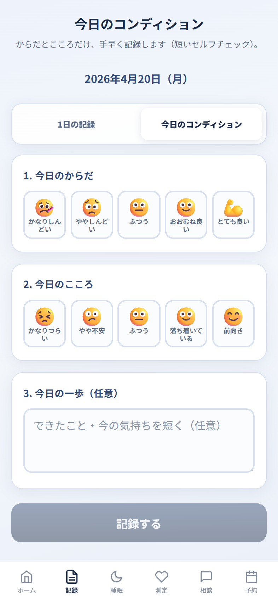

コンディション記録
気分・睡眠・体調をタップ中心で記録し、自己ケアの習慣化へ。
EAP
専用Webアプリと月1〜2回の訪問で、個人支援と職場改善を同時に進める仕組みです。
学校の保健室のように、からだや心を相談できる外部窓口を職場に。日々のWebアプリによる自己ケアと、看護師・公認心理師の巡回相談を連動させ、孤立しないキャリア相談までつなげます。
Before
After



日々のセルフケアはWebアプリで。必要なときは巡回相談につながる、二段階の相談導線です。
気分・睡眠・体調をタップ中心で記録し、自己ケアの習慣化へ。
夜間や休日も、まず話せる一次相談窓口。
担当者へ直接予約。個別相談内容は会社へ共有しません。
匿名化データを職場改善へ。孤立しないキャリア相談にも伴走。
※外部窓口として秘密厳守を徹底。個人の相談内容は会社に共有されません。
Mind
机上の手続きではなく「その人の状態に寄り添う設計」を大切にします。 事業所の運用を整えながら、相談しやすい空気まで一緒につくります。
本来の力を発揮するための「最後の一片」を、一緒に見つけます。 組織と個人それぞれの状態を整理し、安心して前に進める提案へつなげます。
Trust
働く人と企業が、必要なときに安心して相談できる関係づくりを目指します。
Service
主軸は巡回健康相談・EAP。ストレスチェックは必要な事業所のみオプションで組み合わせできます。
職場へ定期的にうかがい、保健室のように相談できる窓口とWebアプリで、日々のメンタルヘルスを支えます。外部EAP窓口との連携もオプションでご相談ください。
現場の運用を整え、職場の状態を可視化して改善の意思決定につなげます。
マークシート・Web受検に対応。面接指導・集団分析まで、必要な範囲でワンストップで支援します。
Flow
お問い合わせから運用開始まで、事業所の体制に合わせて伴走します。
※オプションのストレスチェックを組み合わせる場合は、受検方法やタイムラインをあわせてご案内します。
Price
料金・費用に関するご案内は、このセクションに集約しています。
20名未満一律30,000円〜
主軸のEAPとは別に、必要なときだけお申し込みいただけます。
訪問対応エリア：岡山県内
料金表に記載の金額は新規のお問い合わせ向けの標準案内です。試験運用中にご契約いただいた法人様は、個別にご案内した条件が適用されます。
Stress Check Option
主軸のEAPとは分けて、法令対応が必要な場合だけ追加できます。
※厚生労働省「労働安全衛生調査」では、強いストレスを感じる労働者は6割超。